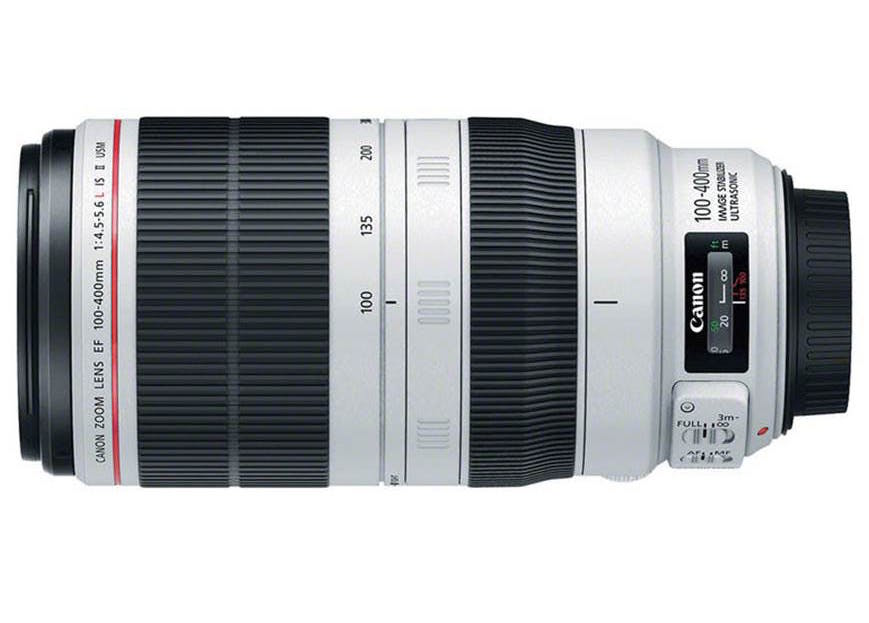

景深 Depth of Field
A. 景深的定義
景深為『對焦點“前後”清楚的範圍』，越大的光圈能產生越淺/短/小的景深。
景深的圖示詳見下圖：


B. 如何拍出更淺的景深
除了越大的光圈外，想要拍出更明顯的景深有下列要訣：
1. 越大的光圈
越大的光圈，能產生越淺的景深。
2. 越大的感光元件
鏡頭與其他條件相同下，使用感光元件越大的相機拍攝，能拍出越淺的景深。
ex: 使用EF 35mm F2.0鏡頭，拍攝距離相同，全片幅FF的景深會淺於APS-C片幅的景深。3. 焦段越長的鏡頭，拍攝成像的景深越淺
使用越長焦/越望遠的鏡頭，拍攝成像的景深淺度會更明顯。（與壓縮感相關）
4. 鏡頭與被拍攝物體距離越短
拍攝時，拍攝者與被拍攝者的距離越近，能使成像景深淺度更明顯。
5. 被攝物體與背景的距離越遠
拍攝時， 讓被拍攝者與背景的距離越遠，能使成像景深淺度更明顯。


C. 淺景深的用途
較淺的景深有下列用途：
1. 淺景深能虛化背景，凸顯主題。
2. 能虛化較複雜的背景，適合需要在過度複雜的場景使用
3. 景深與景深外的邊界會有過度柔化的效果，可以使用於希望柔化的主題
4. 景深由景深內->景深外->更外 是一種過度漸層模糊化效果，可利用於某些構圖。

D. 淺景深的注意事項
1. 一旦主體跑出景深範圍外，會被模糊，使得成像不清楚，因此必須慎選光圈、對焦點。
2. 就算是同距離，使用不同的鏡頭、不同的光圈直接會影響景深，必須掌握不同鏡頭的淨身特性。
壓縮感
A. 何謂壓縮感
壓縮感是「使用越長焦的鏡頭拍攝時」被攝物體與背景的距離會被壓扁、壓縮、縮短的現象 壓縮感的演示詳見以下GIF動圖：
從GIF圖示可以觀察到：
A. 短焦廣角鏡頭：
人物肖像的五官較為立體，且變形嚴重，背景雖被虛化但仍感覺很遠。
B. 長焦望遠鏡頭：
人物肖像的五官較為扁平，變形不嚴重，背景被虛化且明顯拉近被攝者。
B. 如何拍出具壓縮感的照片
->使用長焦段＋大光圈的鏡頭拍攝。
